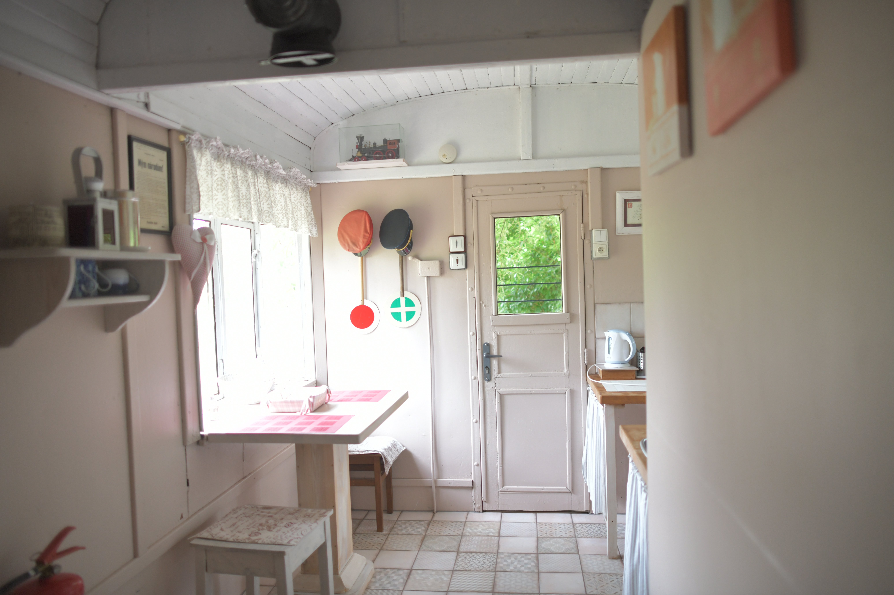
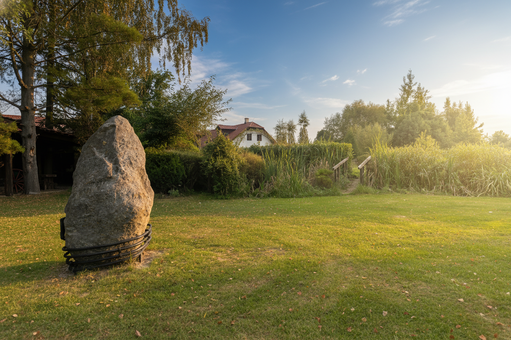
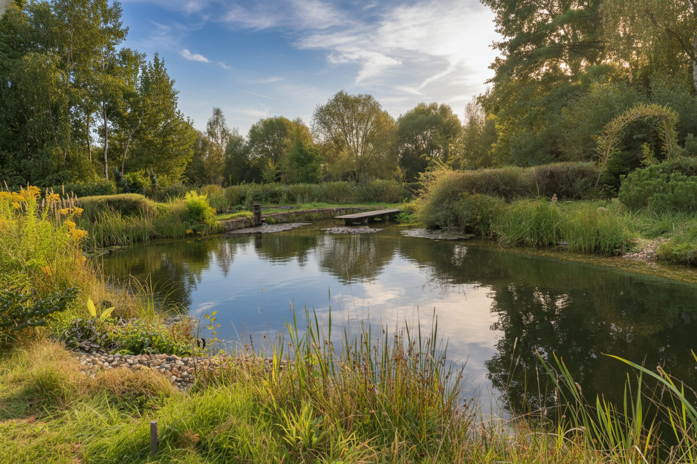
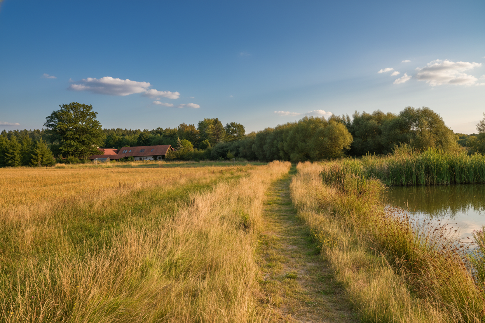
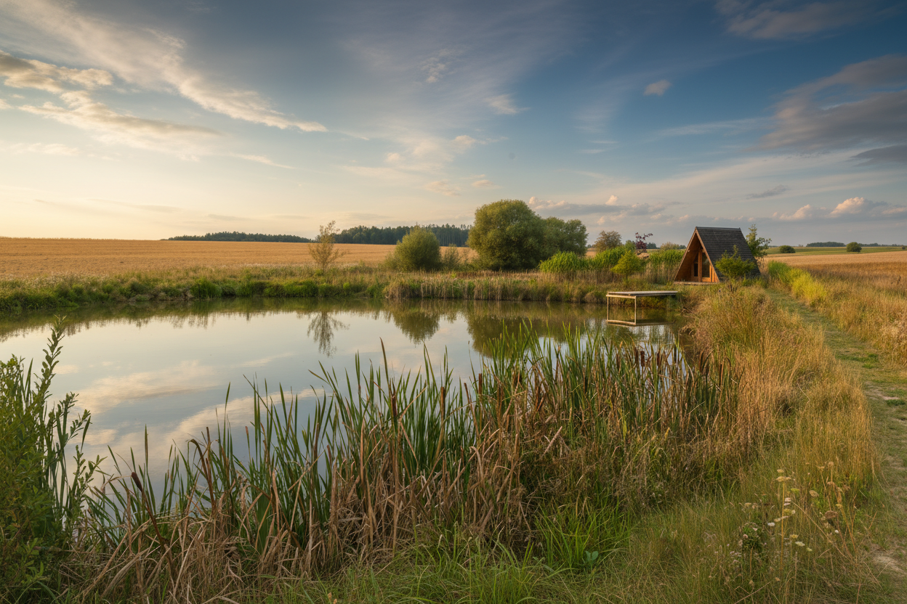
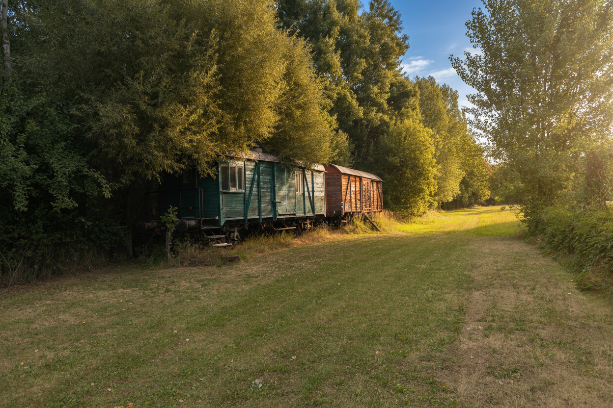

Retreaty
Ticho, příroda a bezpečný prostor pro hlubokou práci na sobě
Hledáte místo pro ztišení, meditaci nebo odborný retreat? Naše samota poskytuje bezpečný a tichý přístav pro terapeutické skupiny i individuální seberozvojové pobyty. Absence okolního hluku a přítomnost čisté přírody vytváří ideální podmínky pro hlubokou práci na sobě, odpočinek mysli a načerpání nové životní energie.
Žádné rušivé zvuky z okolí — jen příroda, vítr a klid, který umožňuje skutečné ztišení a soustředění.
Vnitřní i venkovní místa pro meditaci, pranayamu a skupinová terapeutická sezení s přímým kontaktem s přírodou.
Areál pojme menší terapeutické skupiny i soukromé individuální retreaty pro hloubkovou práci na sobě.
Jezírko, les a louka — přirozené prostředí, které samo o sobě léčí, uklidňuje a obnovuje vnitřní energii.






Kontaktujte nás a probereme, jak vytvořit ideální podmínky pro váš program.
Kontaktujte nás